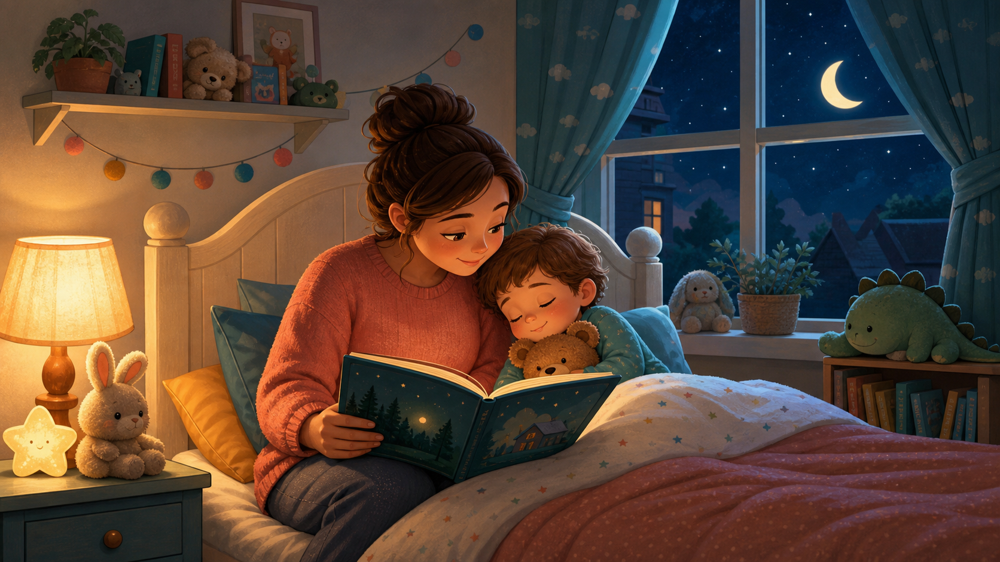

If you have ever whispered, “Please, just close your eyes,” while your toddler suddenly needs to discuss dinosaurs, socks, or the moon, you are in good company. Toddlers are small people with big feelings, growing independence, and very little sense of tomorrow’s schedule.
That is why a bedtime story routine works best when it is not a battle plan. Think of it as a calm script you repeat each night: fewer choices, softer energy, and one cozy moment of connection before sleep time.
Why toddlers often resist bedtime
Bedtime asks toddlers to stop playing, separate from you, and settle their bodies all at once. Resistance can show up as requests, silliness, tears, or sudden bursts of energy. A predictable routine helps because your child does not have to guess what happens next.
- Transitions are hard: moving from active play to quiet rest takes practice.
- Connection matters: a child may ask for “one more” because they want a little more closeness.
- Choices can become too big: unlimited books, videos, or app scrolling can make bedtime feel open-ended.
The simple bedtime story routine
Use this routine after pajamas, teeth, and bathroom needs are finished. Keep your voice gentle and your steps the same, even when the night feels wobbly.
| Step | What to do | Why it helps |
|---|---|---|
| 1. Dim the room | Turn down bright lights and put away busy toys. | Signals that playtime is ending and quiet time is beginning. |
| 2. Choose one story | Offer two calm options in Baboo Stories and let your toddler pick one. | Gives your child control without opening endless negotiations. |
| 3. Read slowly | Use a softer voice, pause often, and skip dramatic sound effects. | Lowers the energy of the room and makes storytime feel soothing. |
| 4. Ask one gentle question | Try “What was the coziest part?” or “Who felt kind in the story?” | Creates connection without turning bedtime into a long conversation. |
| 5. Repeat your goodnight phrase | Say the same short phrase every night, such as “Story is done, hugs are done, now it is time to rest.” | Builds a clear ending that your toddler can learn to expect. |
How Baboo Stories fits into bedtime
Baboo Stories is helpful when you want storytime to feel easy without searching through noisy videos or scrolling at the exact moment you are trying to calm the room. Choose one gentle story, enjoy it together, and then close the routine with the same goodnight phrase.
Importantly, Baboo Stories is not a sleep cure and it should not replace your instincts, pediatric guidance, or a routine that already works for your family. Its role is simpler: helping you create a warm, repeatable story moment that supports a calmer bedtime atmosphere.
What to say when your toddler asks for “one more”
Try a phrase that is loving and firm. The goal is not to win an argument; it is to keep the boundary predictable.
- “We read our one bedtime story. Tomorrow you can choose another.”
- “I hear you want more time with me. I am right here for our hug, then it is rest time.”
- “The story is finished, and our goodnight words come next.”
A calmer routine, not a guaranteed outcome
Some nights will still be messy. Travel, illness, naps, growth spurts, and big feelings can all affect bedtime. A story routine is not about guaranteeing that your toddler falls asleep instantly. It is about giving both of you a familiar way to wind down, reconnect, and end the day with less chaos.
For more bedtime ideas, explore our 10-minute toddler bedtime routine or our guide to the best bedtime stories for toddlers.
Make storytime the calmest part of bedtime
Open Baboo Stories, choose one gentle story, read together, and keep the ending simple. It is a small ritual that can help bedtime feel more connected and less rushed.
Baboo Stories is a calmer bedtime story app for parents who want to read, bond, and help toddlers wind down with gentle read-aloud stories.